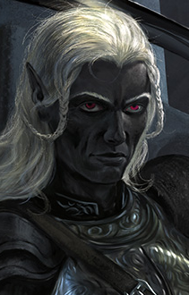

HINWEIS: Wenn Ihr eine vorherige Version der Mod installiert habt, muss diese erst vollständig entfernt werden. Dafür wird diese frühere Version vollständig deinstalliert und alle Ressourcen (Modordner, Installationsprogramm) aus dem Spielordner entfernt.
Das Spiel darf während der Installation nicht bereits laufen.
Bei Installation oder Uninstallation darf das Installationsfenster NICHT über Drücken des "X"-Knöpfchens beendet werden. Das Schließen des Installationsfensters erfolgt über das Drücken der ENTER-Taste, wenn dazu die Aufforderung erscheint.
Bei den Spielen der Enhanced Edition ist es wichtig, dass die Mod in die richtige Spiel-Sprachversion installiert wird (damit ist die Sprache gemeint, in der Ihr das Spiel spielen wollt, diese ist nicht von der Sprache, in der Ihr die Mod installieren wollt, abhängig). Ansonsten seht Ihr nicht die Modtexte im Spiel, sondern Fehlermeldungen. Die Spiel-Sprache, die gemoddet wird, ist in der Datei weidu.conf in Eurem Spielordner vermerkt. Wenn Ihr die Spiel-Sprache, die gemoddet werden soll, ändern wollt, dann deinstalliert alle Mods und löscht die Datei weidu.conf. Bei der Installation der nächsten (ersten) Mod wird die zu verwendende Spiel-Sprache dann wieder abgefragt.
Die EE-Spiele sind aktiv supportete Spiele, für die es ab und zu Patchupdates gibt. Bitte bedenkt, dass jedes Spielupdate Eure Spieldaten wieder bereinigt! Wenn Ihr gerade ein gemoddetes Spiel spielt, dann könnt Ihr nach einem Spielpatch Eure Savegames nicht mehr verwenden. Eine Möglichkeit, dies zu verhindern ist es, den gesamten Spieleordner vor dem Modden in ein anderes Verzeichnis zu kopieren. Dieses Spiel kann dann unabhängig gemoddet und über die BGMain.exe direkt gestartet werden.
Entpackt den Ordner "c#solaufein" und die "setup-c#solaufein.exe" in Euer Spielverzeichnis (BG2/BGT/BGII:EE/EET, enthält die CHITIN.KEY Datei). Bei erfolgreichem Entpacken solltet Ihr einen Ordner "c#solaufein" und eine ausführbare Datei "setup-c#solaufein.exe" in Eurem Spielordner vorfinden. Lasst die "setup-c#solaufein.exe" über Doppelklick laufen. Wählt Eure Sprache und bestätigt die Installation. Es sollten nun alle benötigten Dateien kopiert und die Installation durchgeführt werden. Das Installationsfenster durch das Drücken der ENTER-Taste schließen, wenn die Aufforderung dazu erscheint.
Über erneutes Laufenlassen der setup-c#solaufein.exe in Eurem Spielordner kann die Mod auch deinstalliert oder die Portraitauswahl verändert werden.
Entpackt den Inhalt des Modpakets und kopiert den Inhalt in Euer Spieleordner (BG2/BGT/BGII:EE/EET, enthält die CHITIN.KEY Datei). Korrekt extrahiert, sollten sich in Eurem Spiel-Hauptverzeichnis ein Ordner "c#solaufein" und dei Dateien setup-c#solaufein und setup-c#solaufein.command befinden. Zum Installieren einfach die setup-c#solaufein.command doppelklicken und den Instruktionen folgen. Das Installationsfenster durch das Drücken der ENTER-Taste schließen, wenn die Aufforderung dazu erscheint.
Über erneutes Laufenlassen der setup-c#solaufein.command in Eurem Spielordner kann die Mod auch deinstalliert oder die Portraitauswahl verändert werden.
Entpackt den Inhalt des Modpakets und kopiert den Inhalt in Euer Spieleordner (BG2/BGT/BGII:EE/EET, enthält die CHITIN.KEY Datei). Ladet die neueste Version von WeiDU für Linux von https://github.com/WeiDUorg/weidu/releases und kopiert WeiDU und WeInstall nach /usr/bin. Öffnet nun ein Terminal, cd zu Eurem BG Installationsordner, und lasst 'tolower' laufen, mit der Antwort Y auf beide Nachfragen. Die zweite Option (linux.ini) könnt Ihr auslassen, wenn Ihr dies bereits einmal in Eurem Verzeichnis ausgeführt habt. Falls Ihr Euch nicht sicher seid, ist das Ausführen von tolower mit beiden Optionen der sichere Weg.
Lasst WeInstall c#solaufein in Eurem Spielordner laufen, um die Modifikation zu installieren. Führt wine BGMain.exe aus, um das Spiel zu starten.
Die Modifikation macht Solaufein, den Drow Krieger aus Ust Natha, zu einem in die Gruppe aufnehmbaren NPC. Vorher muss Solaufein aus den Drinnenkammern befreit werden. Dieser Quest kann unabhängig davon gespielt werden, ob Solaufein in die Gruppe aufgenommen werden soll, oder nicht.
Die Kompatibilität mit Weimers Solaufein wird in dieser Liesmich ausführlich behandelt, sofern Ihr Euch beim Spielen die Wahl lassen wollt.
Die Mod ermöglicht es, bei voller Gruppenstärke Solaufein als "7. Gruppenmitglied" mitzunehmen. Hierzu steht unten mehr.
Die zweite, optionale Komponente bietet die Möglichkeit, dem Spiel-Solaufein in Ust Natha das Mod-Portrait zuzuweisen (hierzu Installationsreihenfolge bzgl. Kompatibilität mit Weimers Solaufein beachten).
Die dritte, optionale Komponente bietet für BGII/BGT die Möglichkeit, bei installierter Hauptkomponente von Infinity Animations (Link s.u. "LINKS") die Drideranimationen für die Mod zu verwenden. Die Drinnenanimationen werden durch die Solaufein Mod zur Verfügung gestellt. Ist Infinity Animations nicht vorhanden, werden die Drinnen im Spiel mit Drow ersetzt. Eine Beeinträchtigung beim Spielen besteht nicht (außer, dass es nicht so schön aussieht. ;-) )
Die Komponente kann nachträglich nach der Installation von Infinity Animations installiert werden, so dass die Installationsreihenfolge der Hauptkomponente unabhängig ist.
Für BGII:EE und EET werden die Animationen immer installiert, und diese Komponente wird automatisch übersprungen.
Die vierte, optionale Komponente bietet die Möglichkeit, das alternative Portrait für Solaufein zu installieren, ebenfalls von Holger Kirste!
Die fünfte, optionale Komponente ermöglicht es, dass Solaufein den HC als Drow erkennt, wenn Ihr als Drow spielt. Hierzu wird im Spiel dann eine Variable gesetzt. Die Komponente funktioniert folgendermaßen:
Wenn keine Subrace Mod erkannt wird, wird eine Abtwortoption zu Adalons Dialog eingefügt, mit dem ein Elfen-HC sagen kann, dass er oder sie ein Drow ist. Dies kann leicht immersionsbrechend sein, wenn Ihr nicht als Drow spielt. Wählt diese Antwortoption, damit Solaufein Euren HC als Drow erkennt.
Mit installierter Subrace Mod erfolgt die Detektion automatisch, wenn die 5. Komponente nach der Subrace Mod installiert wird. Die berücksichtigten Subrace Mods sind die folgenden:
-Corsymyr's BG:EE Subrace Mod
-FinnJO's Subrace Mod
-tipun's Subrace Mod
-Welverin's Subrace Mod.
Die Mod muss vor dem ersten Besuch des Unterreichs installiert werden. Das liegt daran, dass am Haupt-Gebiet Änderungen vorgenommen werden, die sonst nicht mehr angezeigt werden.
Solaufein schließt sich nicht einem HC böser Gesinung an, dessen Ruf unter 10 ist. Dies ist darin geschuldet, dass mein Freundschaftspfad wirklich nur für nicht-böse HCs Sinn macht, und ich keinen Dialogpfad für böse HCs schreiben wollte. Ich denke auch, dass Solaufeins Begründung durchaus seinem Charakter entspricht: "Nein. Eure Gesinnung ist kein Geheimnis. Auch wenn Ihr mir bis hierher geholfen habt, steht Ihr für das, was ich versuche, hinter mir zu lassen.".
Die Mod startet, nachdem die Gruppe nach der Dämonenbeschwörung zum letzten Mal die Drowstadt verlässt. Solaufein muss (logisch) verschont worden sein. (Kompatibilität mit Weimers Solaufein s.o.)
Vor dem Eingang zu Adalons Höhle fängt Solaufein die Gruppe noch einmal ab - dabei wird er leider von anderen Drow aufgespürt und als Verräter gefangen genommen. Es ist nun an dem HC, Solaufein davor zu bewahren, in eine Drinne verwandelt zu werden!
Nach der Befreiung aus den Drinnenkammern will Solaufein noch ein paar Gegenstände einsammeln. Er kann dann beim Verlassen des Unterreichs (vorher oder nachher) in die Gruppe aufgenommen werden.
Wenn Ihr ein neues Spiel im TdB-Teil startet und Solaufein in der Höllenenklave erschafft, könnt Ihr im Begrüßungsdialog wählen, ob er Euren HC bereits in Amn begleitet hat (bestehende Freundschaft: Solaufein ist bereits mit dem HC vertraut) oder nach der Befreiung aus der Drinnenkammer getrennte Wege ging (hierbei werden die Freundschaftsdialoge aus dem SvA-Teil mit leichten Anpassungen gestartet! Diese Option solltet Ihr nur wählen, wenn Ihr nicht vorhabt, einen BGII-Durchlauf mit Solaufein zu spielen, da dort der Freundschaftspfad einfach besser passt, m.M.n.). Es wird beim Start im TdB-Teil immer angenommen, dass der HC ihn aus der Drinnenkammer befreit hatte.
Queste "Solaufeins Rettung": Fügt Drinnenkammern in das Unterreich ein (zu betreten vom westlichen Kartenrand, nördlich der Stelle, an dem die Gruppe das erste mal landet (hinter der Gruppe Illithiden)).
Solaufein als vollständig ausgearbeiteter aufnehmbarer NPC: Freundschaftspfad (26 zyklische Dialoge), NPC-Banter (mind. 2 in SvA und 1 in ToB mit jedem BioWare und BeamDog NPC), zusätzliche szenerieabhängige Dialoge und Bemerkungen, Einmischdialoge (nur) an den üblichen Stellen, PID mit mehreren vollständigen Dialogen.
Es gibt in Atkatla eine Begegnung mit zwei nachfolgenden Begegnungen, die letzte in TdB (Amkethran). Dies eine Quest zu nennen wäre höchst übertrieben. Der HC kann dafür auch die Waffen stecken lassen.
Solaufein reagiert darauf, wenn der HC ein Drow ist. (Er steht allerdings nicht zur Verfügung, um Drowlore zu unterrichten.) Um ihn erkennen zu lassen, dass der HC ein Drow ist, muss die 5. Komponente der Solaufein Mod installiert sein. Dann erfolgt die Detektion entweder automatisch, wenn eine der Subrace Kit Mods vorher installiert wurde und der HC darüber zu einem Drow bzw. Halbdrow gemacht wird. Unterstützt werden: Welverin's Subrace Mod, FinnJO's Subrace Mod, Corsymyr's BG:EE Subrace Mod, tipun's Subrace Mod (bisher jeweils nur die englische Version, da keines der Mods andere Sprachversionen hat).
Wenn keine Subrace Mod installiert wurde, dann fügt die 5. Komponente für "handgemachte" Drow HCs eine spezielle Antwortoption in Adalons Dialog, bevor sie ihre Drowillusion wirkt. Diese wird für einen Elfen-HC angezeigt. Klickt diese Antwortoption nur an, wenn Euer HC von Solaufein als Drow angesprochen werden soll.
Wenn Ihr einen Gruppenslot für einen anderen NPC benötigt, dann kann Solaufein auch als sogenanntes "7. Gruppenmitglied" folgen. Hierfür muss er normal aus der Gruppe geworfen werden. Wenn er dann fragt, was Ihr von ihm wollt, dann sagt ihm, dass er weiter hinten folgen soll. Vom Scripting her erhält er dann einen ähnlichenn Status wie ein Familiar, das heißt er folgt dem HC bei Gebietswechseln überall hin, leider auch in Traumsequenzen oder andere Cutscenes. Als 7. Gruppenmitglied kann Solaufein Befehle gegeben werden und es kann auf seine Quickslots und Zauber zugegriffen werden. Er muss normal in die Gruppe aufgenommen werden, um hochzuleveln oder um seine Items und Zauberslotbelegungen zu managen. Alle seine Dialoge, Banter und Einmischdialoge werden normal getriggert.
Um ihn wieder normal in die Gruppe aufzunehmen, sprecht ihn an und wählt in den PID-Optionen, dass Ihr Zugang zu seinem Inventar braucht. Dann wird Solaufein der Gruppe wieder als normales Mitglied beitreten. Wenn dies durch Drücken der Pausetaste entsprechend zeitlich optimiert wird, dann kann das Management seines Inventars und sein Aufsteigen so erledigt werden, dass ein anderer NPC dafür nicht permanent aus der Gruppe entlassen werden muss, sondern dieser wieder in die Gruppe aufgenommen werden kann, wenn er seinen "Kickout"-Dialog startet.
Während Solaufein als 7. Gruppenmitglied folgt, kann er nicht sterben, sondern verbleibt bei 1LP. Fallen seine LP in einem Kampf auf 1 LP dann fällt er in Ohnmacht und wird "neutral" (blauer Kreis), so dass Feinde ihn nicht weiter als Angriffsziel wahrnehmen. Ihn in diesem Zustand zu heilen ändert nichts daran, dass er außer Gefecht gesetzt ist. Erst nach dem Kampf steht Solaufein wieder auf. Aus technischen Gründen wird er vollständig geheilt, bevor er wieder in den 7. Gruppenmitglieds-Modus wechselt. Dies hat mit der Spielengine zu tun und wie sie die LP der Gruppenmitglieder berechnet (Solaufein könnte sonst unter Umständen an diesem Punkt sterben, wenn die HP zu niedrig sind, obwohl er eigentlich nicht tot war).
Das Ohnächtigwerden im Kampf kann verhindert werden, indem Solaufein rechtzeitig geheilt wird. Über PID kann ihm gesagt werden, dass er warnen soll, bevor er diesen Punkt erreicht, dann wird das Spiel pausiert wenn Solaufein droht, zu wenig LP zu haben. Dies scheint in BGT aber nicht zu funktionieren.
HINWEIS: Leider benötigt der "7. Gruppenmitglieds-Modus" im Spiel ein besonderes Handling, um alle Einschränkungen zu berücksichtigen:
(Die Hinweise sind eine Mischung aus den vorhandenen Enginerestriktionen und den von mir verwendeten Workarounds.)
-Der NPC hat im 7.GM keinen "Clear Fog of War" um sich herum. Er kann also im "schwarzen" Bereich der Karte "verschwinden". (Wenn man die gesamte Gruppe anklickt und zu einer Stelle laufen lässt, wird er es ebenfalls versuchen, sofern er nicht irgendwo feststeckt o.ä. Dann hilft nur noch der Teleportationscheat "Strg+j" um die Gruppe wieder zu versammeln. Mir ist das so noch nicht geschehen, es ist aber theoretisch möglich, wenn der NPC z.B. einen Feind verfolgt.)
-Items im Inventar werden *nicht* als Items im Besitz der Gruppe erkannt. Dies ist ein Engineproblem. Daraus folgt, dass Questitems die im Spiel benötigt werden, nicht im Inventar des NPCs sein sollten, wenn sie vom Questgeber erkannt werden sollen. Beispiele: Elvenhaars Buch, Ankhegpanzer für Taerom etc.
-Als "critical" getaggte Quest-Items werden beim Wechsel in den 7. GMM in das Inventar des HC verschoben. Dadurch landen eventuell Gegenstände aus dem Inventar des HC auf dem Boden. Dies ist ein Engineproblem. Daraus ergibt sich, dass Ihr immer nach Wechsel des NPC in de 7.GMM nachschauen solltet, ob Items auf dem Boden gelandet sind!
-Wenn bei einem meiner Quests speziell für diesen NPC neue Items übergeben werden, erscheinen diese immer im Inventar der Gruppe bzw. HC, auch wenn sie eigentlich der NPC erhalten soll. Dies ist ein Engineproblem. Auch wenn ich es so gescriptet haben sollte, dass die Gegenstände schlussendlich im Inventar des NPCs sind, werden sie trotzdem über das Inventar des HC gehändelt. Wie sonst auch im Spiel können auch hierbei Gegenstände aus dem Inventar auf dem Boden gelandet sein.
-Für meine NPCs habe ich versucht, bei den eigenen Questitems (auch wenn es sich um Originalitems des Spiels handelt, sofern sie für den Quest meines NPCs nötig sind) diese auch im Inventar des NPC erkennen zu lassen. Das klappt mit folgenden Einschränkungen:
-- Alle Items, um die es geht, werden über das Inventar das HC gehändelt bevor sie entweder einem Questgeber gegeben oder von diesem erhalten wurden. Das bedeutet, dass andere Items auf dem Boden gelandet sein könnten.
-- Befand sich das weggebene Item in einem Nimmervollen Beutel (dazu zähle ich auch Edelsteinbeutel, Taschen für Flaschen etcpp.), dann wird das Item nicht entfernt. Es ist danach noch immer im Nimmervollen Beutel und kann Probleme bereiten, wenn der Quest nicht stabil gescriptet wurde (und davon ausgeht, dass das Item weg sein sollte).
-- 2. Problem mit Items im Nimmevollen Beutel: Befand sich das weggebene Item in einem Nimmervollen Beutel, dann stürt aus unerfindlichen Gründen das Spiel ab, wenn der NPC danach wieder über die PID-Option als vollwertiges Mitglied in die Gruppe aufgenommen werden soll. Dieser "Absturzbug" lässt sich umgehen, indem das Spiel gespeichert und wieder geladen wird.
Nochmal in Kürze die wichtigsten Tips zusammengefast:
-Nach jedem Questereignis und nach dem Wechsel in den 7.GMM nochmal schauen, ob der HC Items aus dem Inventar verloren hat, die wieder vom Boden aufgelesen werden sollten.
-Speichern, bevor ein 7. GM wieder in die Gruppe aufgenommen werden soll. Sollte das Spiel dann abstürzen, den Spielstand neu laden. Damit sollte der Absturz nicht auftreten.
-Es ist nötig und auch zu empfehlen, nicht-kritische Questitems nicht im Inventar der 7. GM sondern in dem der normalen Gruppenmitglieder zu haben.
-Questitems aus Beuteln/Nimmervollen Taschen im Inventar des 7. GM nehmen, bevor man die entsprechenden Questgeber anspricht, um den "Absturzbug" zu verindern, oder auf alle Fälle zu speichern, bevor man ihn wieder richtig in die Gruppe aufnimmt.
Solaufein ist rechtschaffen neutraler Gesinnung.
Die Mod gibt ihm das Kit "Drowkämpfer", mit den folgenden Eigenschaften:
Vorzüge:
-Erhält zusätzliche 2% magische Resistenz bei jedem Stufenaufstieg bis zu einem Maximum von 80% auf Stufe 16.
-Spezialfähigkeiten: Feenfeuer, Dunkelheit, Dimensionstor, Magie Bannen je 1 / Tag
Nachteile:
-während des Tages hat der Drowkrieger außerhalb geschlossener Räume folgende Nachteile aufgrund des Sonnenlichts:
-Verschlechterung von EtW0 und Rüstungsklasse um je 4
-Verschlechterung von EtW0 und Rüstungsklasse um je 4
-Sichtweite reduziert auf 2
-Reduzierung der Magieresistenz um 50% (gezählt von 100%)
Hierzu vielen herzlichen Dank an Knight, der mir erlaubt hat, seine Zauber "Feenzauber" und "Dunkelheit" aus seinem Knights Kits zu verwenden (zur Sicherheit habe ich alle Dateien umbenannt und mit meinem Präfix versehen). Danke an Acifer für die Zaubergraphiken. Zum Teil habe ich mich für die Zauber auch an die in der Enhanced Edition erhältlichen (SoD und BGII:EE) orientiert, so dass das Ergebnis eine Mischung ist.
Solaufeins hat folgende Eigenschaften:
- STR: 17
- DEX: 16
- CON: 15
- INT: 14
- WIS: 11
- CHA: 10
Upon first meeting, he is at level 12 and comes ill equipped with weapons and armor when he joins the group. His weapon pips when first meeting in the Underdark are:
- Long Sword: ++
- Scimitar: ++
- Sword and Shield Style: ++
- Two Weapon Style: ++
Solaufein verwendet ein Soundset, das aus seinen originalen vertonten Zeilen des Spieles erstellt wurde.
Beide Portraits sind zwei Drowkrieger-Bildern von Holger Kirste entnommen, mit seiner Erlaubnis, dafür vielen Dank!
Es gibt ein alternatives Portraits, das über die vierte, optionale Komponente gewählt werden kann, wobei das Standardportrait in der Hauptkomponente bereits enthalten ist:

------- Standardportrait ------- ------- Alternative -------
Solaufein ist ein mehrere Jahrhunderte alter Drow, der sich innerlich von den Drowgebräuchen distanziert hat. Mit den Drowhierarchien hat er sich auf seine Weise arrangiert: Aufgrund seiner festgefahrenen Situation ist er verbittert und lebt seinen Opportunismus im Schutze seiner hohen Stellung als männlicher Kommandeur und durch den Schutz seines Hauses über Sarkasmus und Widerworte gegenüber den niederen Weibchen aus. Seine Liebe für Phaere ist seit langem erloschen, er verabscheut sie genauso wie alle anderen Drow, die nach Lolths Gunst streben.
Das Hauptthema seiner Dialoge ist die starke Umstellung, die es für ihn bedeutet, nun an der Oberfläche im Sonnenlicht unterwegs zu sein, seine daraus resultierende Blindheit und damit einhergehende Schwächung, und seine reduzierten magischen Fähigkeiten.
Er schließt Freundschaft mit einem HC, der sich einigermaßen für ihn interessiert und sich neutral oder gut verhält. Misstrauen ihm als Drow gegenüber empfindet er als klug.
Achtung: Der Freundschaftspfad enthält einen Moment, in dem Solaufein sich auf das Gefühl "Freundschaft" einstellen muss, und könnte etwas klischeehaft sein.
Nochmal in Kürze die wichtigsten Tips beim Spielen im 7. GMM zusammengefast:
-In manchen Cutscenes und Traumsequenzen wird Solaufein als 7. Gruppenmitglied ebenfalls dabei sein. Ich habe vor, das in einer späteren Version für die mir bekannten Cutscenes zu beheben.
-Solaufein hat keinen sogenannten "Clear Fog of War"-Effekt, wenn er als 7. Gruppenmitglied mitläuft. Das heißt, dass das Gebiet, in dem er sich befindet, nicht gesehen werden kann und Solaufein so im dunklen Bereich "verloren gehen" kann. Durch ein Zusammenrufen der Gruppe sollte er wieder im sichtbaren Bereich auftauchen, falls dies geschieht. (Der Grund hierfür ist, dass die Engine nicht mehr als 8 Kreaturen pro Gebiet mit dieser Eigenschaft händeln kann - darin inbegriffen sind die 6 Gruppenmitglieder und eventuelle Cutscene-Spione.)
-Nach jedem Questereignis und nach dem Wechsel in den 7.GMM nochmal schauen, ob der HC Items aus dem Inventar verloren hat, die wieder vom Boden aufgelesen werden sollten.
-Es ist nötig und auch zu empfehlen, nicht-kritische Questitems nicht im Inventar der 7. GM sondern in dem der normalen Gruppenmitglieder zu haben.
-Gegenstände im Inventar des 7. GM werden nicht erkannt, das heißt Questgeber reagieren, als hätte die Gruppe den Gegenstand nicht dabei. Für meine eigenen NPCs habe ich die modeigenen Questgegenstände zwar größtenteils über Skript auch in diesem Fall im Inventar des NPC erkennen lassen, aber auch das funktioniert nicht problemlos.
-Questitems aus Beuteln/Nimmervollen Taschen im Inventar des 7. GM nehmen, bevor man die entsprechenden Questgeber anspricht, um den "Absturzbug" zu verindern.
-Speichern, bevor ein 7. GM wieder in die Gruppe aufgenommen werden soll. Sollte das Spiel dann abstürzen, den Spielstand neu laden. Damit sollte der Absturz nicht auftreten.
Solaufein ist ein BioWare Charakter. Ich habe nichts dagegen, wenn
-Ihr für Euren eigenen NPC Mod NPC-Solaufein-Dialoge schreibt, ohne mit mir Kontakt aufzunehmen. Ich meine damit wirklich nur NPC-Banter. Mein Solaufein verliebt sich nicht in Euren NPC, auch wenn ich Euch glaube, dass Ihr von Eurem NPC begeistert seid. Er verlässt auch nicht aufgrund eines Konflikts mit Eurem NPC plötzlich von sich aus die Gruppe (wenn Euer NPC ein Problem mit Solaufein hat, darf er oder sie gerne gehen), nur um zwei Beispiele zu nennen.
-Euer NPC auf Inhalte dieser Mod reagiert, wobei ich darum bitte, von direkten Einmischdialogen in meine Moddialoge Abstand zu nehmen.
Bei allen aufgelisteten Punkten gehe ich davon aus, dass Ihr meinem Mod gegenüber Respekt zeigt und so fair seid, Solaufein nicht als lächerlich oder anstößig / empörend darzustellen (nicht, was über seine Charakterisierung durch BioWare hinausgeht).
Wenn Ihr Code aus dieser Mod verwenden wollt, dann nur zu.
Für die Portraits habe ich Holger Kirstes Erlaubnis, diese als Solaufein-Portraits in dieser Mod anzubieten. Ich vermute, dass er nichts dagegen hat, wenn Ihr die Portraits für den privaten Gebrauch anderweitig verwendet. Alle weiterführenden Verwendungen unterliegen jedoch dem Urheberrecht.
Ich freue mich natürlich, wenn Ihr mit mir Kontakt aufnehmen wollt, um meine Meinung zu NPC-Solaufein-Dialogen für Euer NPC-Mod zu hören.
Technische Updates und Bugfixes der Mod sind, sofern ich nicht (mehr) erreichbar sein sollte, gerne willkommen.
This mod uses changed area graphics and animations from IWDII. I did this because I am not able to create such great area graphics myself. Of course there are great area artists in the modding community who could have created such for me, but I justified it for myself with the thought that it keeps the drider chambers in the same style as BioWare made them, which is how I like it.
Further, I created a soundset from Solaufein's original lines. For this, I extracted some phrases and words, which are now used in, for some, different context.
If there are any objections legally wise, please let me know and I will remove offensive content immediately.
This mod is unofficial Fan Content permitted under the Fan Content Policy. Not approved/endorsed by Wizards. Portions of the materials used are property of Wizards of the Coast. ©Wizards of the Coast LLC.
This mod is also not developed, supported, or endorsed by BioWare, Black Isle Studios, Interplay Entertainment Corp., Overhaul Games or Beamdog. All other trademarks and copyrights are property of their respective owners.
Version 3:
- Russian version added, by Scheele & Arcanecoast Team.
- Added Solaufein's weapon pips and a note that he comes ill equipped with weapons into the readme.
- Added more notes about playing in 7th party member note to the readme.
- Added globally unique LABELs to support Project Infinity.
- Changed Solaufein's automated level-up scripts: He will only level up to the PC's level if: he joins the first time for SoA/ToB OR he joins after being a 7th party member. No more automatic level-up although he is in party or was separated for a while.
- Container added to Underdark has prefixed name.
- Corrected doubled tra numbers in GAME.tra.
- Typo corrections.
Version 2.2:
- fixed detection for tipun's subrace mod.
- moved crossmod for subrace mods into 5th component and deactivated drow reply option if subrace mods are detected.
- Updated readme with description of changed 5th component.
Version 2.1:
- tipun's subrace mod for EE considered for check whether PC is drow.
- fixed install error if subrace mod(s) were detected.
- Solaufein should not start a banter directly after changing into 7th party member mode.
- ToB encounter now considers items in Solaufein's inventory if he is in 7th party member mode.
- scripts of 7th party member mode should not make Solaufein stop his attacks.
- added notes to restrictions of the "7th party member mode" to the readme.
- added Dynamic Install Order Category to .ini
- corrected "fatigue" spell for detection of party rested.
- added check so mod cannot be installed after EET_End.
- added folder libiconv-1.9.2-1-src.7z with iconv licence info
Version 2.0:
-English version finished.
-NPC banters revised.
-Elhan's geas: Optimized scripting in case there will be other drow NPCs in the future, EE version considers Hexxat's presence as well.
-Drizzt interjection: added possibility to shorten the conversation via reply option.
-Smuggler encounter tweaked a little. Smuggler will recognize any drow items in group's possession.
-splitted component "Install additional Detection for Drow PC" from the main component.
-Scripting of 7th party member mode improved.
-Fixed small default portrait for classic engine.
-Download link in ini changed to GitHub.
-Changed readme to html.
-Crossmod content for Eilistraee's Song mod added.
Version 1.6:
-fatesp summoning: transition to correct state
-Spell Darkness: corrected BAM display (should be real sphere of darkness), by Acifer
-Change into 7th party member mode and back should not be interrupted.
-all lines from script traify-ed.
-not getting hostile if hit with friendly fire while in 7th party mode
-C#5MINHP.spl should not be applied to party
Version 1.5:
-if interacting with the drider cocoons, texts will also be shown on screen (changed to DisplayStringHead)
-added more variable parameters to EET EET_NPC_TRANSITION (tp2 optimization, no changes ingame)
-added summoning for new ToB game (EET)
-crossmod with Ajantis and Gavin moved into Crossmod Banter Pack
-corrected: infer_charset -> infer_charsets
-EE use pvrz-tis (no more black lines in areas)
-setup-c#solaufein.tp2 renamed to c#solaufein.tp2
-c#solaufein.ini with mod info metadata added.
Version 1.4:
-Solaufein should always change into the 7th party modus without problems (added SetInterrupt(FALSE/TRUE) to script actions).
-update to weidu 246
Version 1.3:
-integrated proof-readings from Isewein (all files except c#solatra.tra)
-some more lines translated to English
-update to weidu 245
Version 1.2:
-changed detection of installed Ajantis BGII mod to a dlg-file to reflect behavior of FILE_EXISTS_IN_GAME
-changed WEIGHT of crossmod banters in the hopes that they will mix better with the existent ones (instead of firing all first).
-edited Ajantis crossmod a little
-adjusted trigger for one of the Ajantis-Solaufein banters (dialogue about belt will not trigger if Ajantis got rid of it alone)
-some more lines translated to English
-added link to artstation to portrait artist's page (Holger Kirste)
-added check whether Player1 was rested (baldur.bcs, baldur25.bcs) using spell "C#FATIG1" that gives Player1 1 point to "FATIGUE" if it is "0" -> same principle as Zed Nocear's rest check for BG1. This is for rare cases that a mod uses a cutscene with Rest() instead of PartyRested(), so 7th party member will be rested, too.
Version 1.1:
-fixed Gavin crossmod install error
Version 1:
-official release with German and part-English version